Master in Bioinformatics and Computational Biology · HS 2026 · Lecture 1: Compartment models
| Date | Lecture | Pitch |
|---|---|---|
| 25 Nov (9–12, 13–15) | L1 Compartment models, L2 Chance | 1: the question |
| 2 Dec (9–12) | L3 Pathogen evolution | 2: the model |
| 9 Dec (9–12) | L4 Space and data | 3: first result |
| 16 Dec (9–12) | — | Final presentations |
Every day: lecture (1 h) → pitches (2–3 min per team) → work on your project.
| Family | Question | Tutorial |
|---|---|---|
| Compartment models | How does an epidemic unfold? | T1 |
| Branching processes | Does one infection, or one resistant cell, take off? | T2 |
| Pathogen evolution | Which strain wins? When does treatment select for resistance? | T3, T4 |
| Space and data | What changes with local contacts? What is \(R_t\) right now? | T5, T6 |
You will have seen the first two by lunch today. Pitch 1 is at 13:00.
Teams of 3–5. One question, answered with a model you build yourselves.
A good project has
Graded on the final presentation and a written report with code that reproduces every figure.
Good uses: explanations, debugging, pseudocode, brainstorming. Ask for explanations, not just answers.
Full policy on the course website.
Before an epidemic
During an epidemic
Models are used for understanding (why does this happen?) and for prediction (what will happen?). This course is mostly about understanding.
Every model trades off simplicity, accuracy and generality.
In your project, aim for the third kind. Start simple, then add one ingredient.
The core ideas we use today, thresholds and \(R_0\), come from these three.
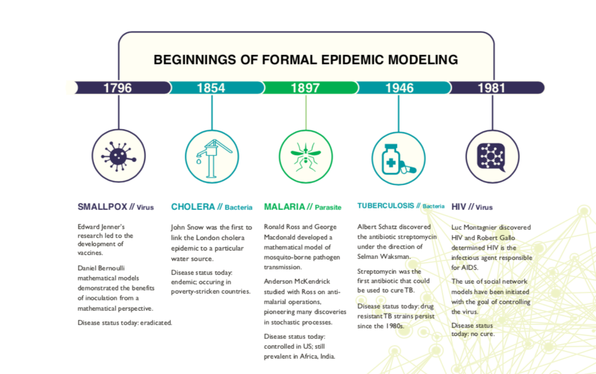
Divide the population by disease status:
| S | susceptible | can be infected |
| I | infected | infectious, can infect others |
| R | recovered (removed) | immune, or dead |
We follow the proportions \(S(t)\), \(I(t)\) and \(R(t)\), with \(S + I + R = 1\), and ignore what happens inside each host. Lecture 3 opens that box.
How fast does \(I\) change?
Up: susceptibles meet infecteds at a rate proportional to \(S \cdot I\) (mass action), and a fraction of meetings transmits. Together: \(\beta S I\).
Down: each infected person recovers at rate \(\gamma\), so the mean infectious period is \(1/\gamma\). Together: \(\gamma I\).
\[ \frac{dS}{dt} = -\beta S I, \qquad \frac{dI}{dt} = \beta S I - \gamma I, \qquad \frac{dR}{dt} = \gamma I \]
Follow one infected person for a short time \(\Delta t\):
New infections caused by this person: \(c\,p\,S\,\Delta t\). With \(I\) infected people:
\[ \text{new infections in } \Delta t = \underbrace{c\,p}_{\beta}\; S\, I\, \Delta t \]
Mass action assumes contacts are random: anyone can meet anyone. Lecture 4 drops this.
Each infected person recovers with probability \(\gamma\,\Delta t\) in a short interval \(\Delta t\), independently of how long they have been infected.
For a group of \(I_0\) people infected at time 0, nobody new joining:
\[ \frac{dI}{dt} = -\gamma I \;\Rightarrow\; I(t) = I_0\, e^{-\gamma t} \]
This is a modelling choice. Real infectious periods are less variable. SEIR models and models with several I stages fix this (later today).
Over a short step \(\Delta t\):
\[ I(t + \Delta t) = I(t) + \beta S I\, \Delta t - \gamma I\, \Delta t \]
Rearrange and let \(\Delta t \to 0\):
\[ \frac{I(t + \Delta t) - I(t)}{\Delta t} = \beta S I - \gamma I \;\xrightarrow{\;\Delta t \to 0\;}\; \frac{dI}{dt} = \beta S I - \gamma I \]
Every flow out of one compartment is a flow into another, so \(S + I + R = 1\) always:
\[ \frac{d}{dt}(S + I + R) = -\beta SI + (\beta SI - \gamma I) + \gamma I = 0 \]
A solution is a set of functions \(S(t)\), \(I(t)\), \(R(t)\) that satisfy the equations for all \(t\).
One case we can solve by hand: at the very start, \(S \approx 1\):
\[ \frac{dI}{dt} \approx (\beta - \gamma)\, I \quad\Rightarrow\quad I(t) = I_0\, e^{(\beta - \gamma) t} \]
The epidemic grows exponentially if \(\beta > \gamma\).
For the full SIR model there is no simple closed form. We solve it numerically, in a few lines of R (T1).
Read the time-step equation backwards: from today’s state, compute tomorrow’s.
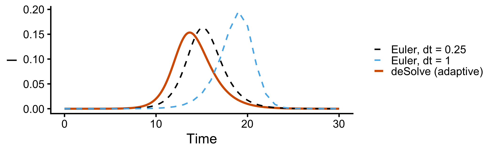
Smaller steps converge to the true solution. deSolve picks the step size for you. Full walkthrough: T0.
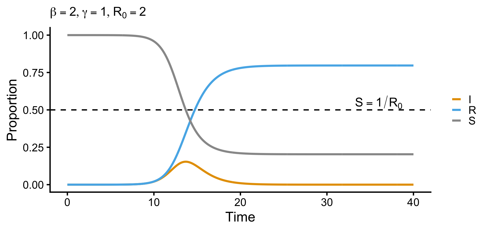
Infections peak exactly when \(S\) drops to \(1/R_0\).
Open T0 — Solving differential equations in R, section 5, and use run_sir() and plot_sir().
In pairs, predict first, then run:
What happens if we double both \(\beta\) and \(\gamma\)?
The epidemic has the same shape and the same final size, but runs twice as fast.
Only the ratio \(\beta/\gamma\) decides whether and how big. The values themselves only set the time scale.
The expected number of secondary cases caused by one infected individual in a fully susceptible population.
One infected person infects at rate \(\beta S\) for an average time \(1/\gamma\). With \(S = 1\):
\[ R_0 = \frac{\beta}{\gamma} \]
\(\dfrac{dI}{dt} > 0 \iff \beta S > \gamma \iff S > \dfrac{1}{R_0}\)
The epidemic can only grow while enough people are still susceptible.
Take one step of the length of an infectious period, \(\Delta t = 1/\gamma\):
\[ I(t + 1/\gamma) \approx I + \beta S I \cdot \frac{1}{\gamma} - \gamma I \cdot \frac{1}{\gamma} = \frac{\beta S}{\gamma}\, I \]
So each infected person is replaced by \(\beta S / \gamma\) others, which is \(R_0 = \beta/\gamma\) when \(S = 1\), and the effective reproduction number \(R_t = R_0\, S(t)\) later on.
Divide \(dS/dt\) by \(dR/dt\), and time drops out:
\[ \frac{dS}{dR} = \frac{-\beta S I}{\gamma I} = -R_0\, S \quad\Rightarrow\quad S = S_0\, e^{-R_0 R} \]
At the end, \(I = 0\), so the final size is \(Z = R_\infty = 1 - S_\infty\). With \(S_0 \approx 1\):
\[ \boxed{1 - Z = e^{-R_0 Z}} \]
uniroot in R).Divide \(dI/dt\) by \(dS/dt\):
\[ \frac{dI}{dS} = \frac{\beta S I - \gamma I}{-\beta S I} = -1 + \frac{1}{R_0\, S} \]
Integrate:
\[ I + S - \frac{\ln S}{R_0} = \text{const} = 1 \quad (\text{at the start: } S = 1, I = 0) \]
The peak is at \(S = 1/R_0\), so
\[ \boxed{I_{\max} = 1 - \frac{1 + \ln R_0}{R_0}} \qquad R_0 = 2: \; I_{\max} \approx 15\% \]
This matches the simulation (0.1534 for both).
The idea: immune people do not just protect themselves. They also block chains of transmission to others.
An infected person meets others at random, and only a fraction \(S\) of contacts can be infected: \(R_t = R_0\, S\).
Once enough people are immune that \(R_t < 1\), chains still start but die out after a few infections. A large epidemic is no longer possible, and non-immune people are protected indirectly:
\[ \text{immune fraction} > \boxed{1 - \frac{1}{R_0}} \]
Example: \(R_0 = 2.5\) needs 60% immune.
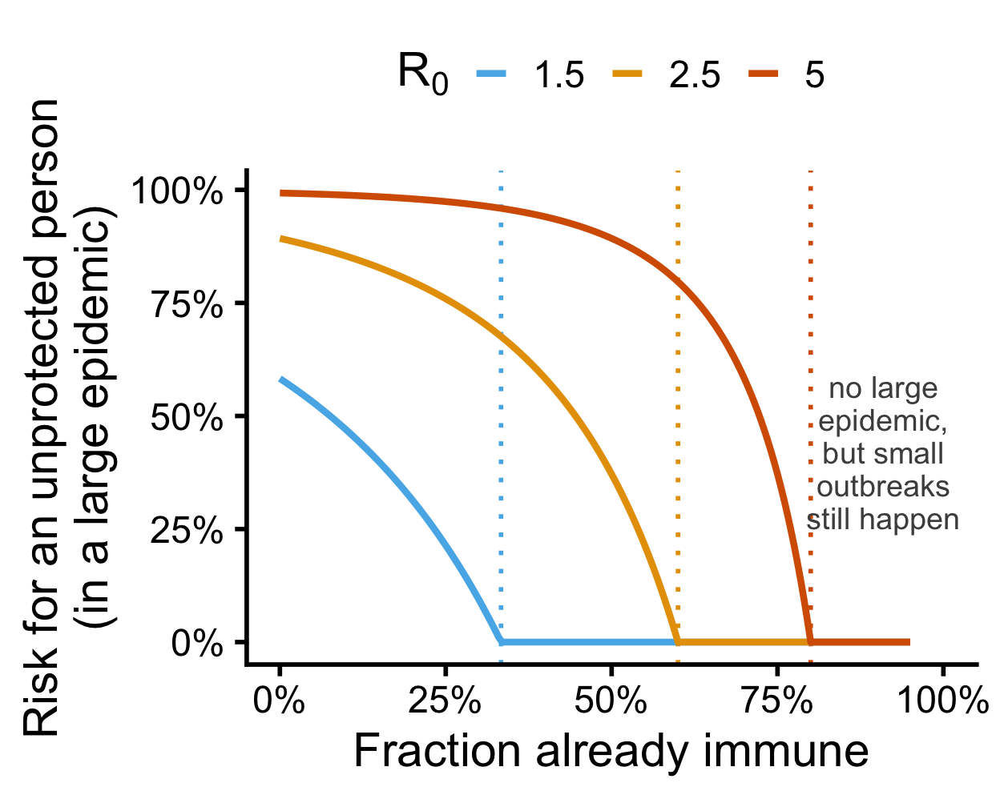
Risk that a non-immune person is infected in a large epidemic, \(1 - z = e^{-R_0(1-p)z}\). Above the threshold (dotted) large epidemics stop, but each introduced case still infects on average \(R_t/(1-R_t)\) others (4 at \(R_t = 0.8\)).
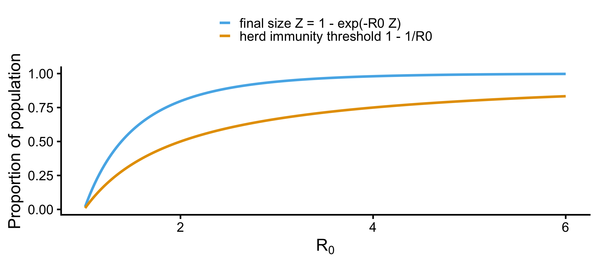
An unmitigated epidemic overshoots the herd immunity threshold: at \(R_0 = 2\), 50% are needed but about 80% get infected.
| Disease | \(R_0\) (typical range) | Herd immunity threshold |
|---|---|---|
| Measles | 12–18 | 92–94% |
| SARS-CoV-2 (ancestral strain) | about 2.5–3 | about 60–67% |
| Seasonal influenza | about 1.3 | about 23% |
\(R_0\) is not a property of the pathogen alone. It depends on contact patterns, population density, season and behaviour. The same pathogen has different \(R_0\) in different places.
\(R_t\) is the reproduction number now, with immunity and interventions. Lecture 4 estimates it from data.
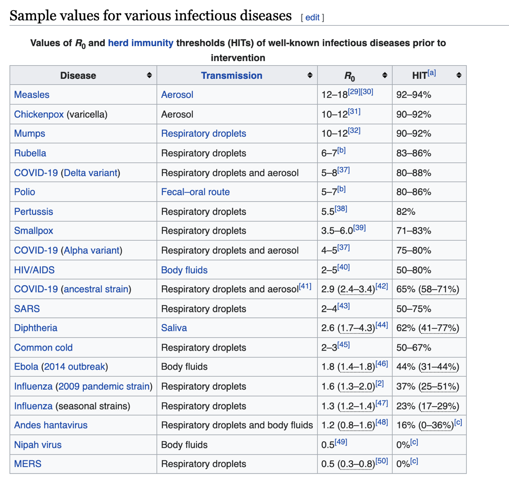
Source: Wikipedia, “Basic reproduction number”. Each value is a range from many studies, a reminder that \(R_0\) depends on the population as much as on the pathogen.
An equilibrium is a state where nothing changes: \(dS/dt = dI/dt = dR/dt = 0\).
For SIR: every state with \(I = 0\) is an equilibrium (any split between \(S\) and \(R\)).
Is it stable? Add a few infected individuals:
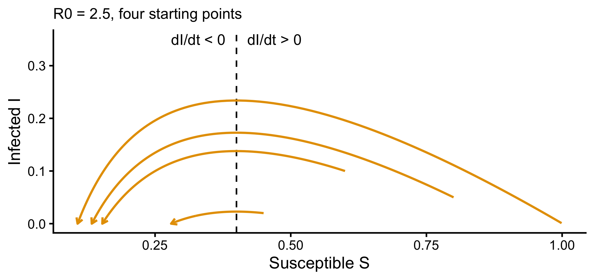
Every trajectory peaks on the line \(S = 1/R_0\) and ends on the axis \(I = 0\).
New susceptibles arrive at rate \(\mu\), and everyone dies at rate \(\mu\):
\[ \frac{dS}{dt} = \mu - \beta S I - \mu S, \qquad \frac{dI}{dt} = \beta S I - (\gamma + \mu) I \]
Now \(R_0 = \beta/(\gamma + \mu)\), and there is a second equilibrium, the endemic one:
\[ S^* = \frac{1}{R_0}, \qquad I^* = \frac{\mu}{\beta}\,(R_0 - 1) \]
It exists only if \(R_0 > 1\).
Set both equations to zero.
From \(dI/dt = 0\), with \(I^* > 0\):
\[ \beta S^* = \gamma + \mu \quad\Rightarrow\quad S^* = \frac{\gamma + \mu}{\beta} = \frac{1}{R_0} \]
From \(dS/dt = 0\):
\[ \mu - \beta S^* I^* - \mu S^* = 0 \quad\Rightarrow\quad I^* = \frac{\mu\,(1 - S^*)}{\beta S^*} = \frac{\mu}{\beta}\,(R_0 - 1) \]
Start at \(S = 1\), \(I = 0\) and add a few infecteds, \(I = \varepsilon\). While \(I\) is small, \(S \approx 1\):
\[ \frac{dI}{dt} \approx (\beta - \gamma - \mu)\, I = (\gamma + \mu)(R_0 - 1)\, I \]
This is linearisation: near an equilibrium, keep only the terms that are linear in the small perturbation. It works for any model, and with several infected classes it gives the next-generation matrix.
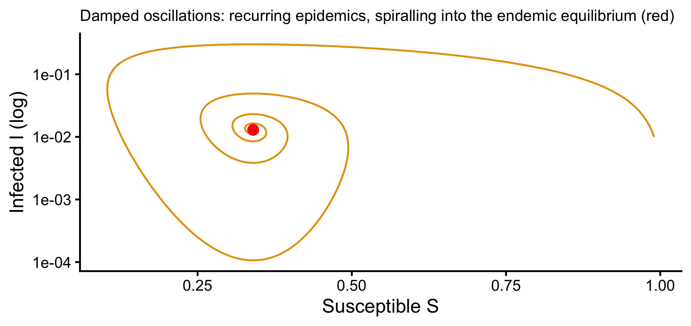
Vaccinate a fraction \(v\) of newborns. They go straight to \(R\), so susceptibles are only produced at rate \(\mu(1 - v)\).
The disease-free state now has \(S = 1 - v\), and the linearisation becomes
\[ \frac{dI}{dt} \approx \big(\beta (1 - v) - \gamma - \mu\big)\, I \]
Elimination requires \(R_0 (1 - v) < 1\):
\[ \boxed{v_c = 1 - \frac{1}{R_0}} \]
This is the same number as the herd immunity threshold. For measles (\(R_0 \approx 15\)) it is about 93%, which is why measles returns as soon as coverage drops a few percent.
Many infections have a latent period: infected, but not yet infectious.
\[ \frac{dE}{dt} = \beta S I - \sigma E \] \[ \frac{dI}{dt} = \sigma E - \gamma I \]
Same \(R_0 = \beta/\gamma\), so the same final size. But the epidemic is slower and flatter.
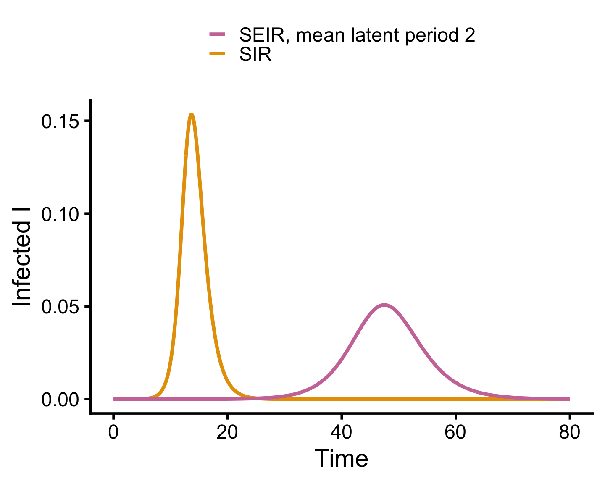
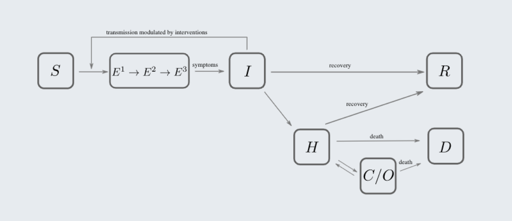
An SEIR model used for planning in 2020 (covid19-scenarios.org, Neher lab, University of Basel):
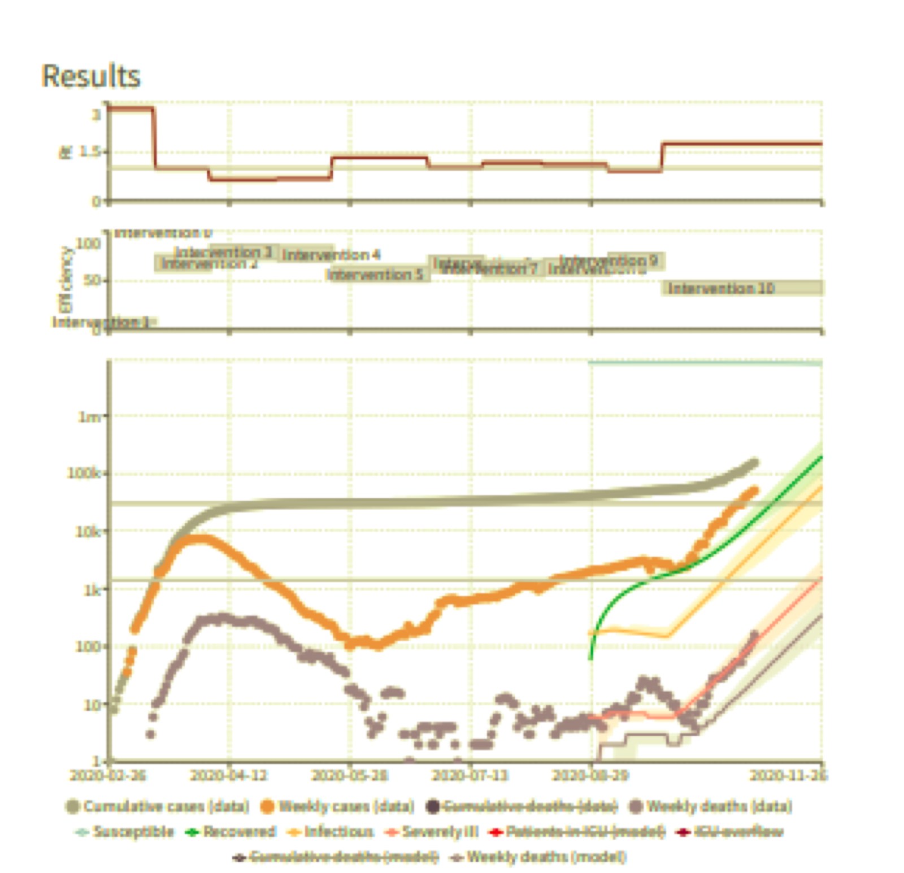
Top: the transmission factor, stepped by interventions. Bottom: model curves (lines) fitted to weekly cases and deaths (dots). The efficacy of each intervention is an input chosen by the user, so every step in \(R\) is an assumption you can vary.
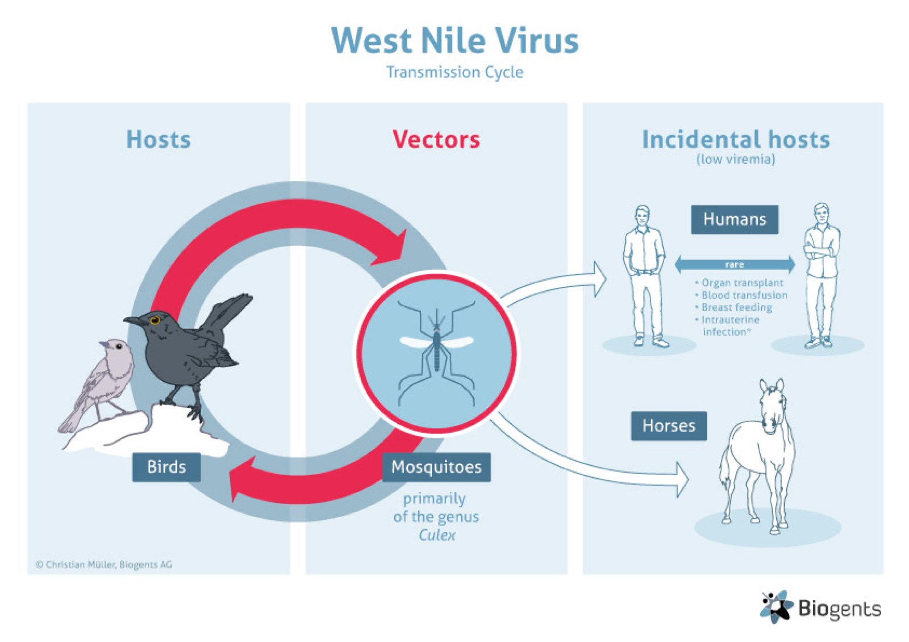
Birds are the reservoir and mosquitoes (Culex) the vector. Humans and horses are dead-end hosts: they get sick but do not transmit. © Christian Müller / Biogents.
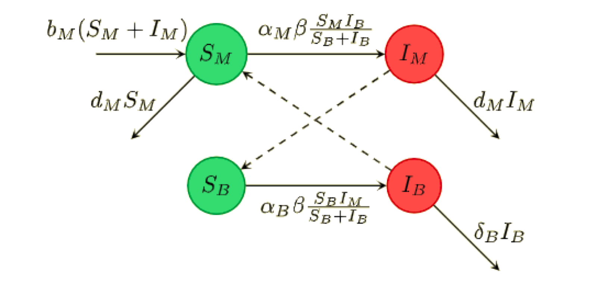
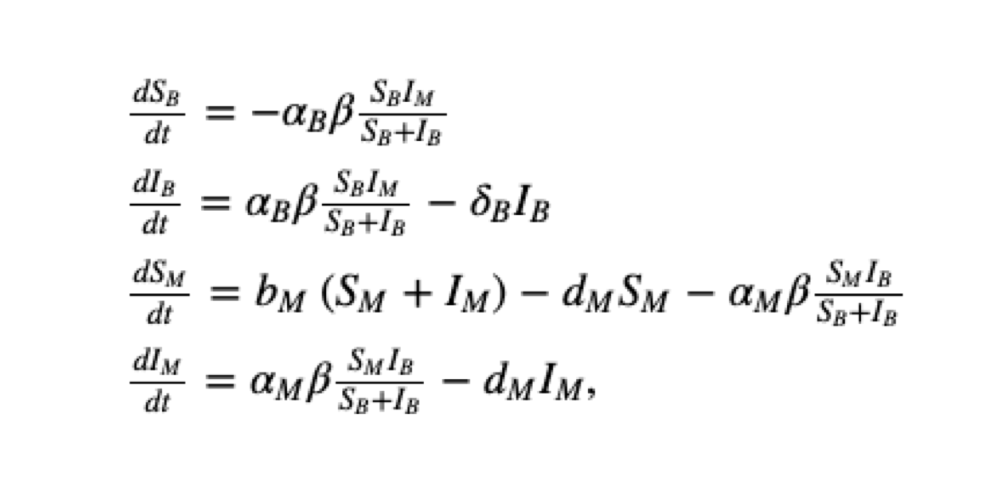
Model from Wonham & Lewis (2008).
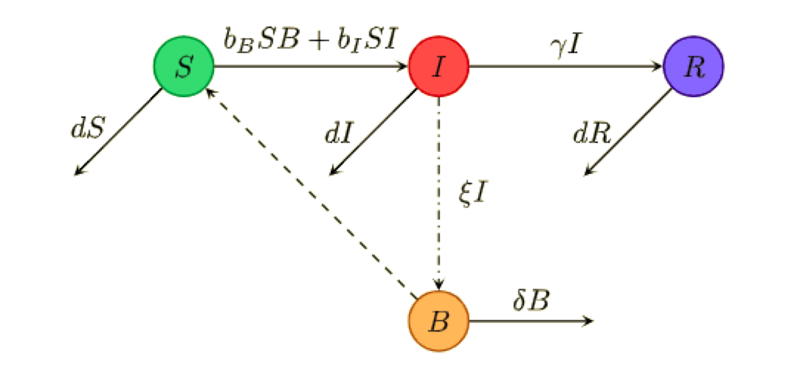
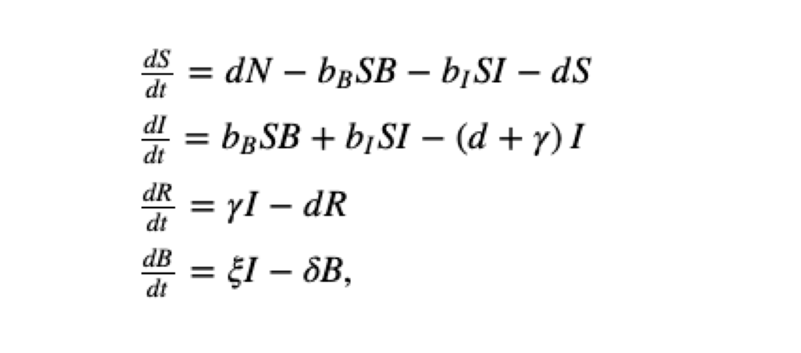
Same recipe every time: define compartments → write the flows → find \(R_0\) and the equilibria.
Tutorial: T1. Next: Lecture 2. What if one infected person is not an average?